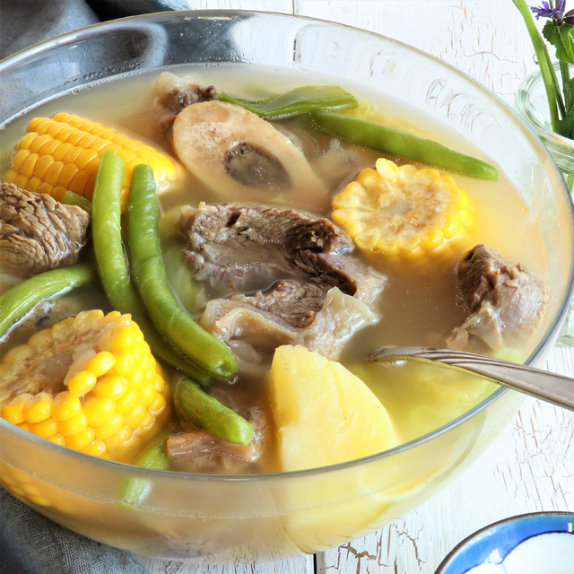

Nilagang Baka

A Filipino beef soup inspired by my potassium deficiency. A healthy, tasty 'ordinary day' soup.
This dish is a staple in any Filipino household. A combination of tender meat, potatoes, beans, cabbage, sweet corn and Banana
tied together with beef broth and patis (fish sauce). My parents used to tell me that this would keep me away
from the doctors' and help me grow tall. I'm not sure if that's true, but I would eat this even if it didn't.
Ingredients/Prep
- Beef or Pork, beef shank or pork ribs are best
- Water
- Paminta (whole peppercorn)
- 2 Large Potatoes, yellow is nice, cubed
- Sweet Corn, as much as you'd like, cut in half
- Patis (fish sauce), less sodium the better
- Napa Cabbage, cut in chunks
- Spring Onions
- Saba Banana
- Medium Onion, sweet
- Beef Cube or Powder
- Salt + Pepper
- Rice, rooster
Steps:
- Season meat the night before, this will make your meat super tender and absorb all the broth. If you really
want to elevate your homecooking in general, salt your meat.
- Pout hot water over meat and onion chunks on medium-high until tender. Usually about 1-2 hours. Go by taste.
Scoop any foam/froth that you see every 30 minutes.
- Add beef cube/stock and patis to taste. An alternative is to use salt, but use your tastebuds as judgement.
- Add corn, banana and potatoes for about 15 minutes.
- Right before serving, add the napa cabbage as it's super fast to cook.
- As a side dip, mix patis with chili flakes
- You're done. Seriously that's it. It's hard to fail making this dish. Serve with rice and let your loved ones compliment you.
Things to note: Buy fish sauce with the lowest amount of sodium. Filipino's don't have the longest life expectancy and that may
be due to such a salty diet. Make sure there is enough broth, add water, patis, and beef stock accordingly. Hope you enjoy :)
Back to home